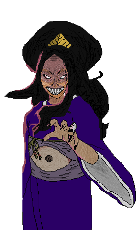
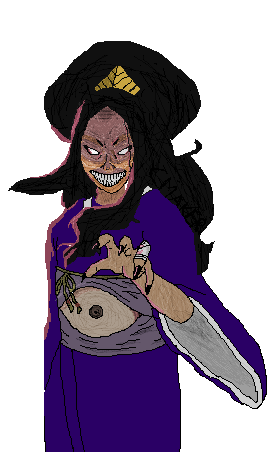

FANART PROTOTIPO DE VIDEOJUEGO, INTRO INICIAL Y PIXELART
INTRODUCCIÓN
Arashiyama, la montaña de los deseos, es un manga publicado por Norma Editorial.
Dani Bermúdez y Fidel De Tovar son el dibujante y el guionista. Seguimos a Dani en su canal de Twitch desde hace años y tenemos en el estante sus 2 obras colectivas: Let's Cook y Olympics; y sus 3 obras principales: Arashiyama, Liquid Memories y El tiempo de los tres.
Todo el material que se ha usado para hacer este trabajo es propiedad de Dani y Fidel y el resultado de este proyecto es solo como fin educativo, de aprendizaje y de reconocimiento al duro trabajo de los dos creadores del manga.
'Una antigua leyenda cuenta que si consigues llegar a la cima de Arashiyama al anochecer del cuarto día de luna llena del año, los dioses te concederán un deseo. Por eso los pequeños Shin y Sumie se escapan de casa de su abuela para ir a “la montaña de los deseos” y pedir a los dioses que hagan volver a sus padres de su “largo viaje por el cielo”. Lo que no se imaginan es que en Arashiyama les esperan algo más que dioses.'
Durante aproximadamente 5 semanas y 2 horas cada día (Campus Verano) hemos utilizado este manga para hacer un prototipo de videojuego de plataformas 2D muy sencillo. Evidentemente está por acabar, es casi injugable y tiene muchos bugs pero sobretodo hemos trabajado la intro y el menú de inicio. En menor medida también un intento de primer nivel con las plataformas. Se han estudiado los personajes principales y enemigos del primer capítulo. El estilo de los dibujos es en pixel art.
Han participado en este proyecto un total de 16 alumnos con edades muy dispares. Los más pequeños con 8 años de 3º de primaria hasta los mayores de 4º de la ESO con 15 años. Para programarlo han usado Scratch, un lenguaje de programación de bloques visuales. Hay que valorar muchísimo el esfuerzo de los chavales para llegar a este resultado, están aprendiendo... ^_^
En Čapek Maker somos fans del manga y anime desde hace mucho tiempo. Veíamos cada tarde en el Super 3 el Dr. Slump y Bola de Drac, y asistíamos al Salón del Manga cuando se celebraba en La Farga de l'Hospitalet.
PIXELART
 

VIDEOJUEGO